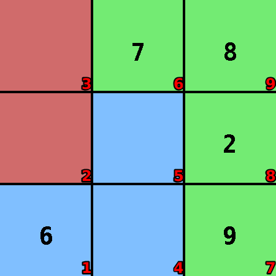
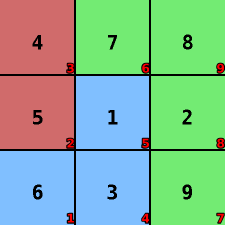

Suko
Language: Teaching Script Entire Dialog
World states:
init-suko.world
final-suko.world
fail-suko.world
Primitive concepts used
Object types:
|
locations, blocks |
Colors:
|
red, blue
|
| Spatial relations: |
on, below, between |
| Functions: |
count of, less than |
Teaching Dialog (Rosie in bold)
TEACHER: The name of the puzzle is suko.
Please setup the puzzle.
TEACHER: Load init-suko.

Ok.
TEACHER: Ok.
Please describe the actions, goals, and failure conditions.
TEACHER: The name of the action is write-1-to-9.
What are the conditions of the action.
TEACHER: You can write a number that is between one and nine onto an empty location.
Please describe the meaning of 'empty' in this context.
TEACHER: If the value of a location is absent then the location is empty.
Ok, I've learned the meaning of 'empty' for this context.
I've learned the action.
TEACHER: The solution has four steps.
Ok.
TEACHER: Load final-suko.

Ok.
TEACHER: The name of the goal is all-filled.
Please setup the goal state.
TEACHER: Ok.
Please describe the goal.
TEACHER: The goal is that all locations are filled.
Please describe the meaning of 'filled' in this context.
TEACHER: If the value of a location is more than zero then the location is filled.
Ok, I've learned the meaning of 'filled' for this context.
I've learned the goal.
TEACHER: Load fail-suko.
Ok.
TEACHER: If the value of a location is the value of another location then you lose.
Please setup the failure condition.
TEACHER: Ok.
I've learned the failure condition.
TEACHER: If the locations in a grouping are filled and the sum of the values of the grouping is not the value of a block that is above the grouping then you lose.
Please setup the failure condition.
TEACHER: Ok.
Please describe the meaning of 'grouping' in this context.
TEACHER: If a block is filled and their locations are under the block then they are in a grouping.
Ok, I've learned the meaning of 'grouping' for this context.
I've learned the failure condition.
TEACHER: If the blue locations are filled and the sum of the values of them is not ten then you lose.
Please setup the failure condition.
TEACHER: Ok.
I've learned the failure condition.
TEACHER: If the red locations are filled and the sum of the values of them is not nine then you lose.
Please setup the failure condition.
TEACHER: Ok.
I've learned the failure condition.
TEACHER: If the green locations are filled and the sum of the values of them is not twenty-six then you lose.
Please setup the failure condition.
TEACHER: Ok.
I've learned the failure condition.
TEACHER: Done.
I've learned suko. Should I try to solve the puzzle?
TEACHER: No.
Ok.